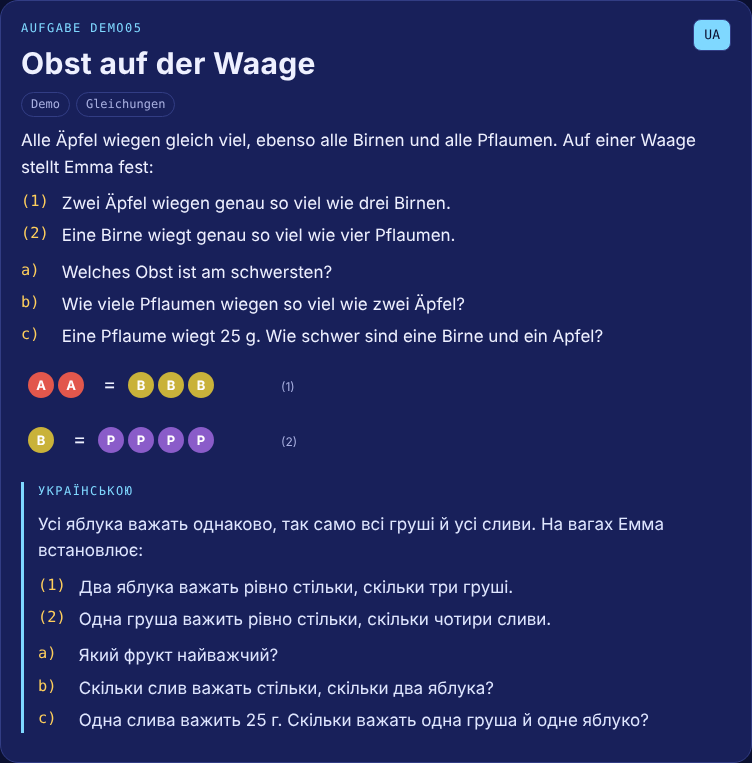
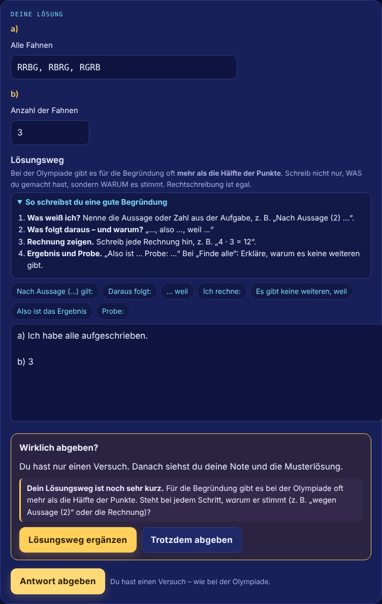
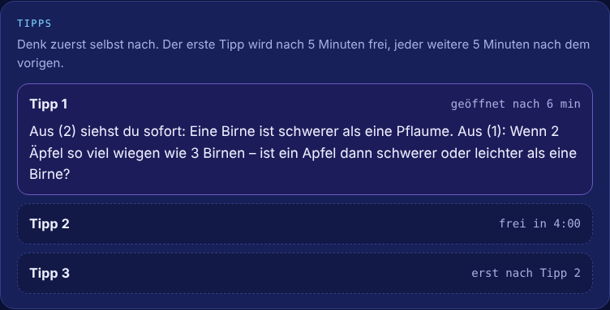
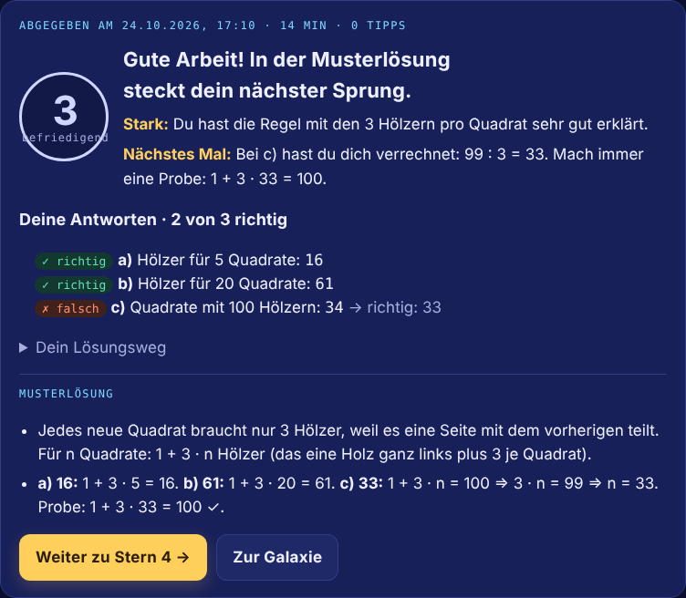

Olympiade-Training
Ein Offline-Mathe-Trainer für einen Fünftklässler auf einem Android-Tablet von 2014: gestufte Tipps, KI-Bewertung der schriftlichen Begründung und Ergebnis-Sync über Make.com.
- Meine Rolle
- Anforderungen, Produktentscheidungen, Tests auf echter Hardware, Make-Automatisierung, Auswertung der Ergebnisse. Den Code hat Claude geschrieben.
- Werkzeuge
- Make.com (Webhook, Router, Data Store), Claude, Legacy-Build mit Babel, automatisierte Tests
Ausgangslage
Ein Fünftklässler in Berlin bereitete sich auf die Mathematik-Olympiade vor. Sein einziges Gerät: ein ASUS Fonepad 7 von 2014 mit Android 4.1.2 und Chrome 42, ohne Updates und oft ohne Internet.
- Die Olympiade bewertet den Lösungsweg. Ein richtiges Ergebnis ohne Begründung bringt nach den offiziellen Bewertungsschemata meist nur 30 bis 50 Prozent der Punkte.
- Zweisprachige Familie. Die Aufgaben sind auf Deutsch, die Eltern wollen sie auf einen Blick auf Ukrainisch lesen. Das Kind schreibt seine Begründungen auf Deutsch, seiner Zweitsprache.
- Motivation. Olympiade-Aufgaben sind schwer, ein reiner Test frustriert einen Zehnjährigen schnell.
- Keine Transparenz für die Eltern. Welche Aufgaben sind gelöst, wie lange hat es gedauert, welche Tipps waren nötig, wo liegen die Lücken?
Vorgehen
Das Projekt entstand aus einem echten Bedarf zu Hause. Ich habe es wie ein kleines Produktprojekt geführt: Claude war der Entwickler, Problem, Entscheidungen, Tests und Automatisierung lagen bei mir.
- Anforderungen über strukturierte Fragen. Vor dem ersten Code waren alle offenen Punkte als Auswahlfragen entschieden: Reihenfolge der Aufgaben, Zeitpunkt der Tipps (alle 5 Minuten), ein Versuch wie im echten Wettbewerb, Notenskala 1 bis 6, was übersetzt wird und was nicht.
- Prototyp und Feldtest. Die erste Version lief am Desktop, auf dem Tablet blieb sie leer. Ursache: Chrome 42 versteht modernes JavaScript und CSS nicht. Lösung: eine zweite Build-Strecke nach ES5, eigenes CSS ohne Grid und Custom Properties und eine Startprüfung, die statt einer leeren Seite den Fehler und die Browserversion anzeigt.
- Zweites Problem im Feld. Der eingebaute HTML-Viewer von Android führt kein JavaScript aus. Die Datei erklärt das jetzt selbst und zeigt, wie man sie in Chrome öffnet.
- Iteration anhand echter Daten. Nach der ersten Woche habe ich die echten Abgaben ausgewertet. Drei Muster: unvollständiges Aufzählen (5 von 6 Anordnungen), Punktverlust durch fehlende Klammern und Begründungen, die sagen, was gerechnet wurde, aber nicht warum. Darauf habe ich mit neuen Antworttypen, einem Begründungsgerüst und Übungen in einer „Werkstatt“ reagiert.
- Automatisierung statt Kopieren. Ergebnisse als JSON-Code vom Offline-Tablet abzuschreiben war im Alltag unbrauchbar. Ich habe ein Make.com-Szenario aufgesetzt, siehe unten.
Lösung
- Gestufte Tipps: Tipp 1 nach 5 Minuten Nachdenken, jeder weitere 5 Minuten später. Tipp 3 legt die ganze Logik offen, es bleibt nur das Rechnen.
- Begründungstrainer: Pflichtfeld für den Lösungsweg mit Satzanfängen, einer Checkliste in vier Schritten und einem Hinweis, wenn die Erklärung das Was nennt, aber nicht das Warum.
- Bewertung: sofortige Prüfung jedes Antwortfelds, Schulnote für die Begründung durch Claude, danach die Musterlösung.
- Motivation, die Anstrengung belohnt: Ränge, „Sternenstaub“ und 13 Abzeichen, etwa „Durchhalter“ für alle Tipps genutzt und trotzdem fertig.
- Ehrliche Zeitmessung: Es zählt nur aktive Zeit. Eine drei Tage offene Aufgabe meldet nicht mehr 4.000 Minuten.




Automatisierung
Das Tablet schickt die Ergebnisse, sobald es online ist, an einen Make.com-Webhook. Ein Router unterscheidet zwischen echtem Upload und Verbindungstest, die Daten landen pro Gerät in einem Data Store, und die Antwortseite bestätigt dem Kind: „Gesendet!“. Claude liest den Data Store über den Make-Connector und bewertet die Begründungen.
| Einfaches Formular statt API-Aufruf | Das Tablet sendet ein normales HTML-Formular. Das braucht kein CORS und funktioniert auch mit Chrome 42. |
|---|---|
| Vor dem Rollout geprüft | Ob Android 4.1 das TLS-Zertifikat des Webhooks akzeptiert. |
| Datenschutz | Keine Daten des Kindes im Repository. Die Webhook-Adresse wird erst beim Build eingesetzt und nie veröffentlicht. |
Ergebnis
- Der Trainer läuft offline auf dem Tablet von 2014, als eine einzige HTML-Datei ohne Installation.
- Die Ergebnisse kommen ohne Kopieren bei den Eltern an: mit Zeitstempel, genutzten Tipps, Antworten, Begründung und Note.
- Die Auswertung der echten Abgaben hat drei konkrete Schwächen gezeigt, die jetzt gezielt geübt werden.
- Für den alten Browser werden nur die 24 nötigen Polyfills gebündelt: etwa 66 KB statt etwa 750 KB.
Die neun Aufgaben in der Demo habe ich eigens für das Projekt geschrieben. Die echten Olympiade-Aufgaben sind urheberrechtlich geschützt und nicht enthalten.